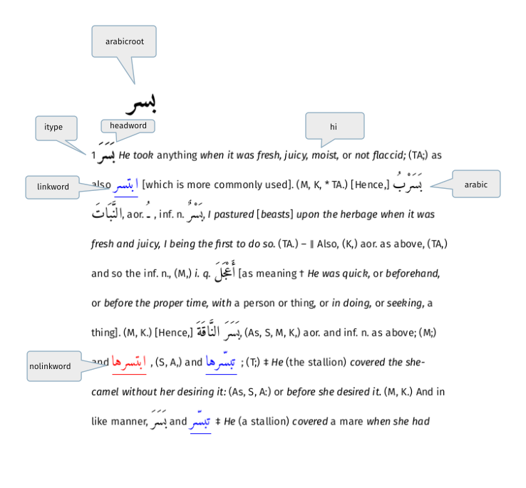
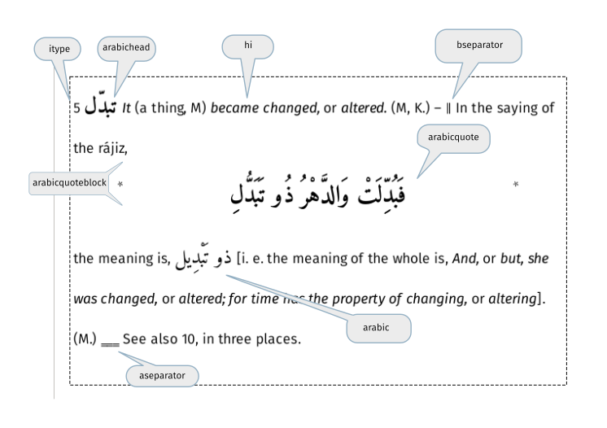

The images below have been annotated to show which CSS classes affect which part of the appearance of the Lexicon entry and, thereby, what needs to be changed to produce a particular result, The CSS class names shown in the annotation boxes.

To view this entry, search for node 2512. (Use shortcut Ctrl+S,N to search for a node.)

To view this entry, search for node 2006.
For example, to change the appearance of the headword it is a matter of changing the CSS specification for that class either by using the EditView dialog or using a text editor. The deault is:
.arabichead { font-family :Amiri;font-size : 22px;font-weight : bold; }
Within the application, the HTML for an individual entry can be seen by right-clicking on the entry and selecting Show Html from the context-menu.
For reference, the HTML for second example is shown below:
<html>
<!--XSLT script version 1.0-->
<body class="main">
<p><span class="itype">5</span> <span class="arabichead">تبدّل</span>
<a name="n2006"></a>
<span class="hi">It</span> (a thing, M) <span class="hi">became changed,</span> or <span class="hi">altered.</span> (M, K.) ―
<span class="bseparator">‖</span> In the saying of the rájiz,
</p>
<div class="arabicquoteblock">
<table align="center" width="100%">
<tr>
<td align="right" width="10%">*</td>
<td align="center" width="80%"><span class="arabicquote">فَبُدِّلَتْ وَالدَّهْرُ ذُو تَبَدُّلِ</span></td>
<td width="10%">*</td>
</tr>
</table><
/div>
<p>the meaning is, <span class="arabic">ذو تَبْدِيل</span> [i. e. the meaning of the whole is, <span class="hi">And,</span> or <span class="hi">but, she was changed,</span> or <span class="hi">altered; for time has the property of changing,</span> or <span class="hi">altering</span>]. (M.) <span class="aseparator">‗‗‗</span> See also 10, in three places.
<div class="entryend"></div>
</p>
</body>
</html>
[Note: the above description only applies to entries created using the released XSLT stylesheet.]